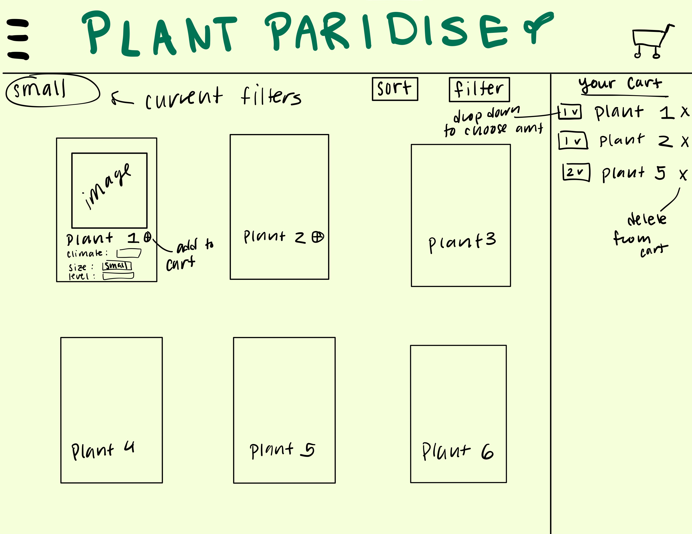

In order to practice creating a reactive website, I created a site called "Plant Paradise" whose display changes based on user actions. Plant Paradise is an online plant shop that allows users to sort and filter through its inventory and add/remove plants to their cart. Going into this project, the key aspects that I wanted to focus on were becoming familiar with React applications, using states in React, and using components as types of objects. Additionally, before I began making my own reactive website, I carried out a competative analysis of 3 sites with similar aggregator features to inspire the functionality of my webpage.
To see which list features I wanted to include in my own aggregator, I first wanted to compare aggregators on existing websites. To do this, I chose 3 websites with favoriting functionality: Spotify (browser), Pinterest, and YouTube. Below I break down the comparisons I found between the 3 websites.
| Spotify | YouTube | ||
|---|---|---|---|
| Visible on profile | No | Yes | No |
| Message/animation after favoriting | Yes | Yes | Yes |
| Dislike function | No | No | Yes |
| Shows how many other people liked | No | Yes | Yes |
| Represented as positive icon (heart, thumbs up) | No | Yes | Yes |
| Stored in chronological order | Yes | Yes | Yes |
| Don't have to switch pages to like | Yes | Yes | Yes |
Likes:
Based on my own experiences, I found some of the
features in the above table more successful than others. I enjoyed when
the websites represented the "like" button as a heart or thumbs up
because it lets me know as a user which button I need to press to
favorite something. This is something YouTube and Twitter have that
Spotify does not. Spotify's is simply a "+", which can be confusing
because it is not clear what list you are adding the song to. Another
feature I enjoyed was some kind of animation or sign that I had
successfully liked something. This is something all the websites had,
and it is helpful in letting the user know the state of the system. I
also thought all 3 websites were pretty straightforward in terms of
finding the like button because once you had the post/song/video in
front of you, it only takes one click to like it.
Dislikes:
One factor that might be confusing for users is the dislike
functionality on YouTube. This is because if you dislike a video, it
does not save the video anywhere, making it difficult to unlike it.
Additionally, the dislike button is right next to the like button, which
can make it easy to accidentally dislike a video. Some of the more
subjective features are making your likes visible on your profile and
showing how many likes something has. Visible likes can be good if you
want to share things you find interesting, but can be bad if a user
wants to keep their likes more private. Showing how many likes something
has can be good to show how popular it is, but can be bad if it causes
the user to prematurely judge how good a post/video/song is.
What I want to incorporate:
Based on this comparison analysis, there are three main features I want
to focus on implementing in my own aggregator.
To demonstrate the use of an aggregator, I chose to replicate an online plant store. My plant store (Plant Paradise) has an inventory of plants that users can add to their cart. Since some users may not know exactly what they are looking for, the online store allows them to filter inventory by climate and ease of care. Additionally, users can sort alphebetically and by price. Users can add multiple of each plant to their cart and remove if they change their mind. Below is a quick mockup of Plant Paradise.
(Note that some of the features of the mockup ended up different in the final product!)
The key features of Plant Paradise are the sort, filter, add to cart, and remove from cart functionalities. Once users click the "sort" button, they will see a dropdown menu of features to sort by and can choose one at a time. When the user clicks on the climate or difficulty filters, they will see a dropdown menu of features to filter by. Users can click the add button to add to their cart. Inside the cart, they can continue to add multiple of the plant to the cart (which will display the current amount in the cart) or delete it.
After deciding what features to include and what my page would look like, I coded the site! Some of the feautres of the final product ended up being different than in my quick mockup. For instance, the cart itself does not have an add/remove item feature, only the item cards. However, overall, I was able to use React states to carry out the most important functionalities: sorting, filtering, and keeping track of cart contents.
Overall, I believe my reactive webpage met the goals I set. I was succesfully able to utilize React states and components that respond to user functionality. The process made me much more comfortable with incorporating states into projects and showed me how essential they are for allowing a website to be reactive. I had a difficult time at first determining the best way to sort and filter, but once I had a more solid understanding of how to utilize states, I found these functionalities pretty straightforward to implement. I also found the competative analysis process inspiring when it came to picturing what I wanted my webpage to look like.